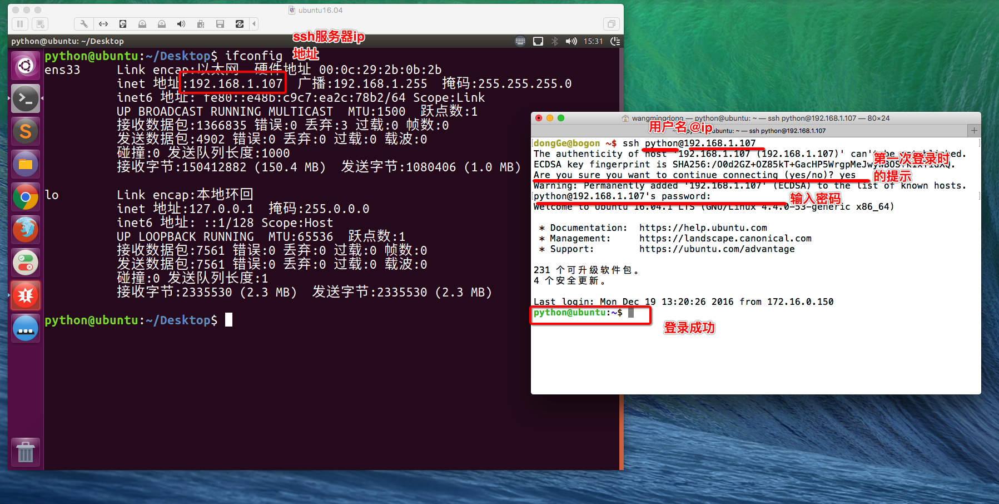

Linux常用服务器构建-ssh和scp
1.ssh
<1>ssh介绍
SSH为Secure Shell的缩写，由 IETF 的网络工作小组（Network Working Group）所制定；SSH 为建立在应用层和传输层基础上的安全协议。
SSH是目前较可靠，专为远程登录会话和其他网络服务提供安全性的协议。常用于远程登录，以及用户之间进行资料拷贝。
利用SSH协议可以有效防止远程管理过程中的信息泄露问题。SSH最初是 UNIX 系统上的一个程序，后来又迅速扩展到其他操作平台。SSH 在正确使用时可弥补网络中的漏洞。SSH 客户端适用于多种平台。几乎所有 UNIX 平台—包括 HP-UX、Linux、AIX、Solaris、Digital UNIX、Irix，以及其他平台，都可运行SSH。
使用SSH服务，需要安装相应的服务器和客户端。客户端和服务器的关系：如果，A机器想被B机器远程控制，那么，A机器需要安装SSH服务器，B机器需要安装SSH客户端。
<2>安装ssh
A.安装ssh服务器
sudo apt-get install openssh-server
B.远程登陆
ssh 用户名@IP
使用ssh访问，如访问出现错误。可查看是否有该文件 ～/.ssh/known_ssh 尝试删除该文件解决。
<3>使用ssh连接服务器
SSH 告知用户，这个主机不能识别，这时键入"yes"，SSH 就会将相关信息，写入" ~/.ssh/know_hosts" 中，再次访问，就不会有这些信息了。然后输入完口令,就可以登录到主机了。

2.scp
远程拷贝文件,scp -r 的常用方法：
1.使用该命令的前提条件要求目标主机已经成功安装openssh-server
如没有安装使用 sudo apt-get install openssh-server 来安装
2.使用格式：
scp -r 目标用户名@目标主机IP地址：/目标文件的绝对路径 /保存到本机的绝对/相对路径
举例：
scp -r itcast@192.168.1.100:/home/itcast/QQ_dir/ ./mytest/lisi
在后续会提示输入“yes”此时，只能输“yes”而不能简单输入“Y”
拷贝单个文件可以不加 -r参数，拷贝目录必须要加。
本地文件复制到远程：
scp FileName RemoteUserName@RemoteHostIp:RemoteFile
scp FileName RemoteHostIp:RemoteFolder
scp FileName RemoteHostIp:RemoteFile
本地目录复制到远程：
scp -r FolderName RemoteUserName@RemoteHostIp:RemoteFolder
scp -r FolderName RemoteHostIp:RemoteFolder
远程文件复制到本地：
scp RemoteUserName@RemoteHostIp:RemoteFile FileName
scp RemoteHostIp:RemoteFolder FileName
scp RemoteHostIp:RemoteFile FileName
远程目录复制到本地：
scp -r RemoteUserName@RemoteHostIp:RemoteFolder FolderName
scp -r RemoteHostIp:RemoteFolder FolderName